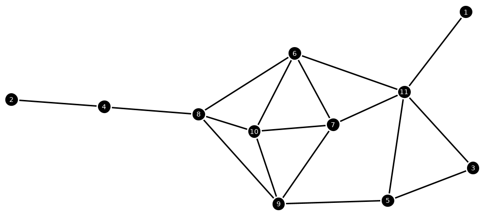
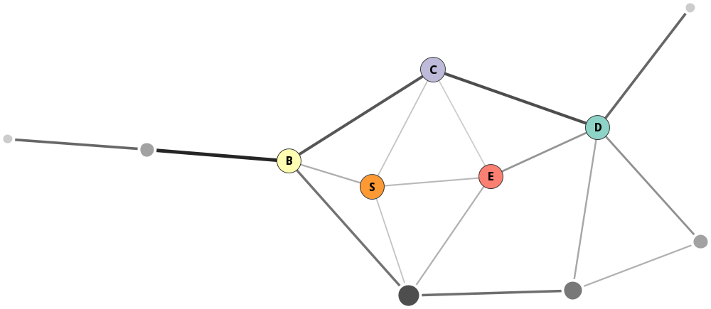
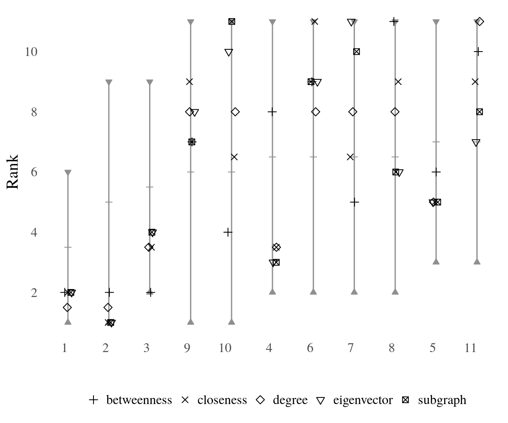

The literature is flooded with centrality indices and new ones are introduced on a regular basis. Although there exist several theoretical and empirical guidelines on when to use certain indices, there still exists plenty of ambiguity in the concept of network centrality. To date, network centrality is nothing more than applying indices to a network:
The only degree of freedom is the choice of index. The package comes with an Rstudio addin (index_builder()), which allows to build or choose from more than 20 different indices. Blindly (ab)using this function is highly discouraged!
The netrankr package is based on the idea that centrality is more than a conglomeration of indices. Decomposing them in a series of microsteps offers the posibility to gradually add ideas about centrality, without succumbing to trial-and-error approaches. Further, it allows for alternative assessment methods which can be more general than the index-driven approach:
The new approach is centered around the concept of positions, which are defined as the relations and potential attributes of a node in a network. The aggregation of the relations leads to the definition of indices. However, positions can also be compared via positional dominance, leading to partial centrality rankings and the option to calculate probabilistic centrality rankings.
For a more detailed theoretical background, consult the Literature at the end of this page.
Installation
To install from CRAN:
install.packages("netrankr")To install the developer version from github:
#install.packages("devtools")
devtools::install_github("schochastics/netrankr")Simple Example
This example briefly explains some of the functionality of the package and the difference to an index driven approach. For a more realistic application see the use case example.
We work with the following small graph.
library(igraph)
library(netrankr)
g <- graph.empty(n = 11,directed = FALSE)
g <- add_edges(g,c(1,11,2,4,3,5,3,11,4,8,5,9,5,11,6,7,6,8,
6,10,6,11,7,9,7,10,7,11,8,9,8,10,9,10))
Say we are interested in the most central node of the graph and simply compute some standard centrality scores with the igraph package. Defining centrality indices in the netrankr package is explained here.
cent_scores <- data.frame(
degree = degree(g),
betweenness = round(betweenness(g),4),
closeness = round(closeness(g),4),
eigenvector = round(eigen_centrality(g)$vector,4),
subgraph = round(subgraph_centrality(g),4))
# What are the most central nodes for each index?
apply(cent_scores,2,which.max)#> degree betweenness closeness eigenvector subgraph
#> 11 8 6 7 10
As you can see, each index assigns the highest value to a different vertex.
A more general assessment starts by calculating the neighborhood inclusion preorder.
P <- neighborhood_inclusion(g)
P#> [,1] [,2] [,3] [,4] [,5] [,6] [,7] [,8] [,9] [,10] [,11]
#> [1,] 0 0 1 0 1 1 1 0 0 0 1
#> [2,] 0 0 0 1 0 0 0 1 0 0 0
#> [3,] 0 0 0 0 1 0 0 0 0 0 1
#> [4,] 0 0 0 0 0 0 0 0 0 0 0
#> [5,] 0 0 0 0 0 0 0 0 0 0 0
#> [6,] 0 0 0 0 0 0 0 0 0 0 0
#> [7,] 0 0 0 0 0 0 0 0 0 0 0
#> [8,] 0 0 0 0 0 0 0 0 0 0 0
#> [9,] 0 0 0 0 0 0 0 0 0 0 0
#> [10,] 0 0 0 0 0 0 0 0 0 0 0
#> [11,] 0 0 0 0 0 0 0 0 0 0 0Schoch & Brandes (2016) showed that \(N(u) \subseteq N[v]\) (i.e. P[u,v]=1) implies \(c(u) \leq c(v)\) for centrality indices \(c\), which are defined via specific path algebras. These include many of the well-known measures like closeness (and variants), betweenness (and variants) as well as many walk-based indices (eigenvector and subgraph centrality, total communicability,…).
Neighborhood-inclusion defines a partial ranking on the set of nodes. Each ranking that is in accordance with this partial ranking yields a proper centrality ranking. Each of these ranking can thus potentially be the outcome of a centrality index.
Using rank intervals, we can examine the minimal and maximal possible rank of each node. The bigger the intervals are, the more freedom exists for indices to rank nodes differently.
plot_rank_intervals(P,names = 1:11,cent.df = cent_scores,ties.method="average")
The potential ranks of nodes are not uniformly distributed in the intervals. To get the exact probabilities, the function exact_rank_prob() can be used.
res <- exact_rank_prob(P)
str(res)#> List of 7
#> $ lin.ext : num 739200
#> $ names : chr [1:11] "1" "2" "3" "4" ...
#> $ mse : int [1:11] 1 2 3 4 5 6 7 8 9 10 ...
#> $ rank.prob : num [1:11, 1:11] 0.545 0.273 0 0 0 ...
#> $ relative.rank: num [1:11, 1:11] 0 0.3333 0 0.0476 0 ...
#> $ expected.rank: num [1:11] 1.71 3 4.29 7.5 8.14 ...
#> $ rank.spread : num [1:11] 0.958 1.897 1.725 2.54 2.16 ...lin.ext is the number of possible rankings. For the graph g we could therefore come up with 739,200 indices that would rank the nodes differently.
rank.prob contains the probabilities for each node to occupy a certain rank. For instance, the probability for each node to be the most central one is as follows.
round(res$rank.prob[ ,11],2)#> [1] 0.00 0.00 0.00 0.14 0.16 0.11 0.11 0.14 0.09 0.09 0.16relative.rank contains the relative rank probabilities. An entry relative.rank[u,v] indicates how likely it is that v is more central than u.
# How likely is it, that 6 is more central than 3?
round(res$relative.rank[3,6],2)#> [1] 0.75expected.ranks contains the expected centrality ranks for all nodes. They are derived on the basis of rank.prob.
round(res$expected.rank,2)#> [1] 1.71 3.00 4.29 7.50 8.14 6.86 6.86 7.50 6.00 6.00 8.14The higher the value, the more central a node is expected to be.
Note: The set of rankings grows exponentially in the number of nodes and the exact calculation becomes infeasible quite quickly and approximations need to be used. Check the benchmark results for guidelines.
Theoretical Background
netrankr is based on a series of papers that appeared in recent years. If you want to learn more about the theoretical background of the package, consult the following literature:
Schoch, David. (2018). Centrality without Indices: Partial rankings and rank Probabilities in networks. Social Networks, 54, 50-60.(link)
Schoch, David & Valente, Thomas W., & Brandes, Ulrik. (2017). Correlations among centrality indices and a class of uniquely ranked graphs. Social Networks, 50, 46-54.(link)
Schoch, David & Brandes, Ulrik. (2016). Re-conceptualizing centrality in social networks. European Journal of Appplied Mathematics, 27(6), 971–985. (link)
Brandes, Ulrik. (2016). Network Positions. Methodological Innovations, 9, 2059799116630650. (link)